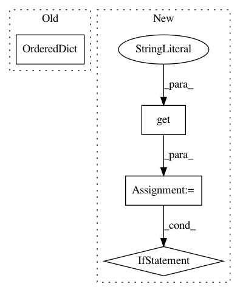

0cd42478586c9cb1febb6b76eea068aac8869a1e,sacred/ingredient.py,Ingredient,__init__,#Ingredient#Any#Any#Any#Any#,38
Before Change
self.post_run_hooks = []
self.pre_run_hooks = []
self._is_traversing = False
self.commands = OrderedDict()
// capture some context information
_caller_globals = _caller_globals or inspect.stack()[1][0].f_globals
mainfile_name = _caller_globals.get("__file__", ".")
self.base_dir = os.path.dirname(os.path.abspath(mainfile_name))
After Change
raise RuntimeError("Defining an experiment in interactive mode! "
"The sourcecode cannot be stored and the "
"experiment won"t be reproducible. If you still"
" want to run it pass interactive=True")
// =========================== Decorators ==================================
@optional_kwargs_decorator
def capture(self, function=None, prefix=None):
Decorator to turn a function into a captured function.
The missing arguments of captured functions are automatically filled
from the configuration if possible.
See :ref:`captured_functions` for more information.
In pattern: SUPERPATTERN
Frequency: 3
Non-data size: 4
Instances
Project Name: IDSIA/sacred
Commit Name: 0cd42478586c9cb1febb6b76eea068aac8869a1e
Time: 2018-01-24
Author: dismaldenizen@gmail.com
File Name: sacred/ingredient.py
Class Name: Ingredient
Method Name: __init__
Project Name: elfi-dev/elfi
Commit Name: c61a48cc0bdc8c5f748495a7e2567789cb748cad
Time: 2017-06-30
Author: jarno.lintusaari@aalto.fi
File Name: elfi/methods/parameter_inference.py
Class Name: BayesianOptimization
Method Name: set_objective
Project Name: dpressel/mead-baseline
Commit Name: 08a31864a8e7a633546790d8fed54455b914d96b
Time: 2019-06-18
Author: dpressel@gmail.com
File Name: python/baseline/pytorch/embeddings.py
Class Name: CharConvEmbeddings
Method Name: __init__